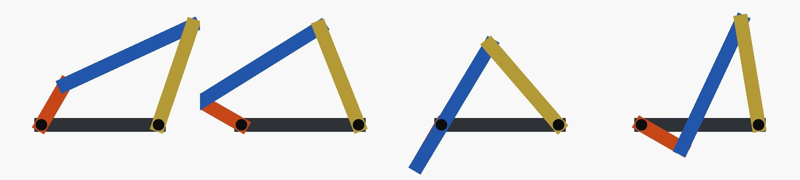
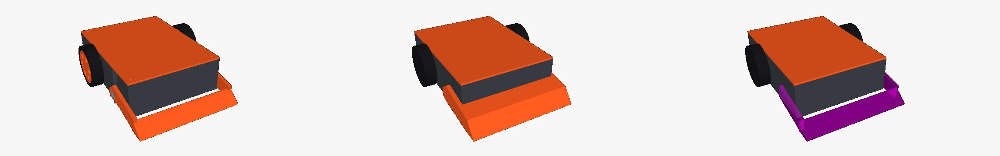

featuretree started as a format for parts: a feature tree that FreeCAD, Onshape and build123d each rebuild natively. It also had an assembly format, but only as the place where an ingested cadgen assembly lands. It had occurrences, typed mates, gear couplings and named poses, and nothing turned it into anything else.
Building our antweight battlebot showed why that wasn't enough. Its MuJoCo model reused the CAD meshes for display but described the collision shapes, the joints and the rigid bodies a second time, by hand. Any of those could drift from the CAD and no test would notice. The fix was to treat the assembly as the design artifact and generate the downstream files from it. This post covers what we added to featuretree to make that work: loop-closing mates, a pose solver, a MuJoCo emitter and a 3MF emitter.

Loop-closing mates
Mates in the assembly format form a tree, with each part having at most one parent mate. That's what cadgen's format allows, and it's what most code that walks an assembly expects. A four-bar, a parallelogram or a slider-crank isn't a tree, though: the last joint closes a loop.
So closures go in their own list, next to the tree. A closure is a revolute, spherical or fastened constraint between two parts that the tree already connects. Anything that only reads mates never sees a cycle, so existing code is unaffected.
mates = [A.mate("crank", "revolute", "ground", "crank", axis=O2),
A.mate("knee", "revolute", "crank", "coupler", axis=A_pt),
A.mate("elbow", "revolute", "coupler", "rocker", axis=B_pt)]
closures = [A.closure("rocker_pivot", "revolute", "rocker", "ground", axis=O4)]
A.closure_problems(asm) # []
A.mobility(asm) # {"mobility": 1, "planar_closures": ["rocker_pivot"], ...}Validation rejects a closure between parts the tree doesn't already connect (that's just a mate) and a loop with no moving joint in it. The mobility count needed one correction. The textbook spatial count (Grübler) treats a revolute closure as removing five degrees of freedom, which makes a four-bar −2, i.e. locked. A planar loop only loses two. The count now checks whether every joint around the loop is parallel to the closure axis and counts it as planar if so, and the four-bar comes out at 1.
Posing an assembly
The positions in an assembly file describe one pose. Rendering, exporting or checking it anywhere else means setting some joints and solving the rest so the loops stay closed. assembly_kin.solve() does that in under 200 lines of numpy, docstrings included. It works in displacements from the authored pose, so the authored pose is exactly the identity. It minimises the closure gaps with damped least squares, and it moves the driven joints in small steps from the authored pose. That last part keeps a linkage on the branch it was authored in, so a four-bar doesn't jump to its crossed form.
The test is a Grashof crank-rocker (links 20, 60, 45 and 50 mm), checked against the closed-form four-bar solution rather than against itself. Over a full crank turn the solved rocker angle matches the closed form to within 0.001°. One limit: gear couplings aren't solved yet, so coupled joints have to be driven explicitly.
MuJoCo, generated
mjcf_emit turns an assembly into a MuJoCo model without writing any geometry by hand.
| assembly | MuJoCo |
|---|---|
parts joined by fastened mates | one rigid body |
| revolute / slider / cylindrical mate | hinge / slide / both, with the mate's axis and limits |
| revolute closure | one point constraint if the loop is planar, two along the axis if it's spatial |
| spherical / fastened closure | a point constraint / a weld |
| each part | its own mesh, with inertia integrated from the mesh |
Facts that matter to a simulation but aren't design facts go in a separate small dict, never in the assembly file: masses of bought parts, actuators, joint friction, and collision settings. Collision needs that dict because MuJoCo collides a mesh as its convex hull. That's right for a box-shaped chassis and wrong for anything concave:

The fork's hull would make an opponent bounce off empty air. So a concave part declares its own convex pieces, built by the same function that builds the part, and the emitter collides those. For the battlebot the generated model's mass matches the CAD roll-up exactly (176.29 g), on the same four rigid bodies. Its duel sim now contains only the arena, the actuator laws and the tactics. In MuJoCo, the four-bar tracks the closed-form rocker angle within the test's 0.5° tolerance and keeps the loop closed to within 0.2 mm.
One trap worth passing on, because it caught us twice in one day. MJCF reads joint ranges in degrees by default, but actuator setpoints are always radians; the compiler's angle setting only changes how the XML is parsed. The emitter writes body frames aligned with the world at the authored pose, so a body's orientation in the sim is its change from the authored pose, not its absolute angle.
3MF, generated
3MF has meshes, units, materials and a real object hierarchy, but no parameters and no joints. So it's never the design source; it's the format the design is delivered in. threemf_emit writes it with lib3mf, the 3MF Consortium's library:
emit_assemblywrites the whole assembly as one object that places every part, optionally at a pose from the solver. The assembly file itself goes inside the package as an attachment, so the file carries both the manufacturable geometry and the mates that explain it. Readers that don't know about it ignore it.emit_objectswrites loose objects, one per print item: a print plate. For the battlebot that's each printed part in its print orientation, packed on the bed, one plate per material (pictured in the battlebot post).read_assemblyreads a package back through lib3mf for checking. The battlebot round-trips with every part within 0.006 mm of where the CAD puts it, and the four-bar round-trips at the authored pose and at a solved one.
What's not done
No FreeCAD or Onshape assembly output yet. Both CAD systems have assembly solvers that handle closed loops natively, so the emitters mostly need to declare the mates; that's next. Parts that aren't in featuretree's part format yet can only enter as meshes, which is how the battlebot's printed parts get in today. Moving them over needs one new part feature, an extrude added at an arbitrary plane, the counterpart of the existing placed cut. The spatial-closure path (two constraints along the axis) is built but has only been tested on the planar four-bar so far. And the solver uses numerical derivatives, which is fine at these sizes and would want analytic ones for big assemblies.
What's not new
Closed-loop kinematics is textbook material. Commercial CAD assembly solvers handle loops, and MuJoCo closes them with equality constraints, as we do; URDF can't express them at all. What we're adding is an open, neutral assembly format that sits alongside an editable feature tree, with the sim model and the manufacturing files generated from it and checked against it.
Who did what
We steered the design with Claude: where closures should live, what counts as a sim fact rather than a design fact, and what the tests had to compare against. Claude wrote and debugged the code and tests. featuretree's full suite passes, including the 15 new tests.
Everything is in punkfab/featuretree; the first project using it is punkfab/battlebot. The background on the part format is in One feature tree, several CAD systems. Got a mechanism that should exist as one file and open everywhere? Start a project →